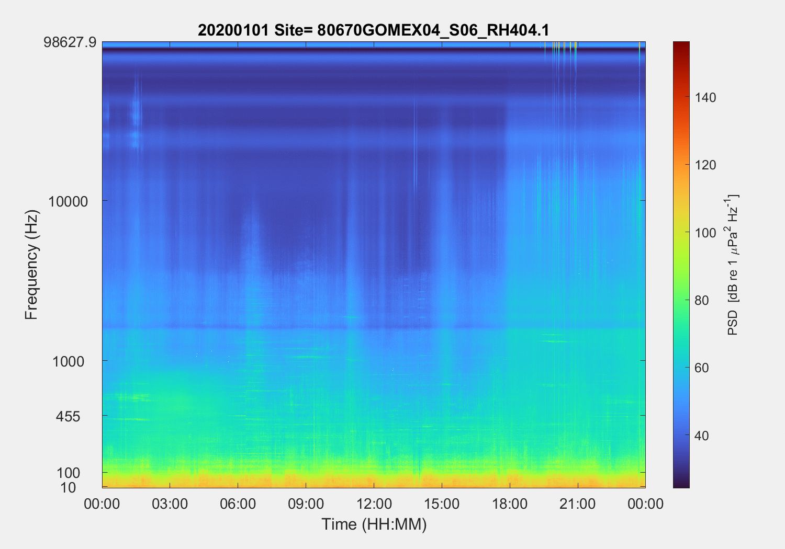
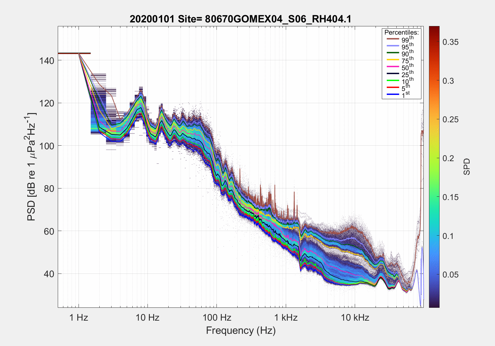
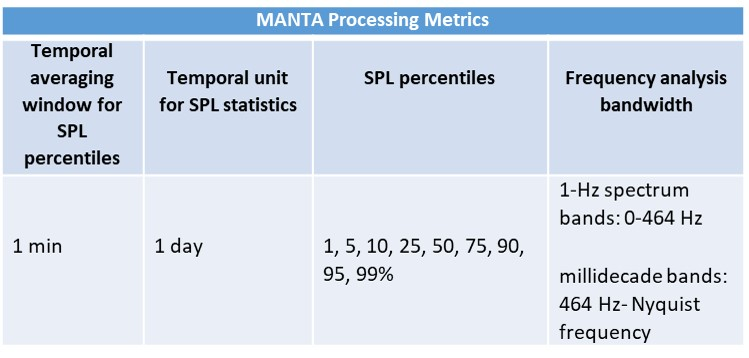

MANTA Software
Click here for MANTA Software Downloads and Installation Video
Terms of Use
MANTA software is supplied as-is and no warranty is made, expressed or implied, regarding the software, nor does the fact of distribution of data products constitute such a warranty. The MANTA software development teams requests that any publication or use of MANTA generated products credit the MANTA software development appropriately in the acknowledgements. MANTA is licensed under a General Public License provided here.
Acknowledgement: MANTA (Making Ambient Noise Trends Accessible) software was used in the processing of a portion or all of the acoustic data products. Authors credit the MANTA software team and MANTA support from the Richard Lounsbery Foundation.
MANTA Products
Four types of single channel products are generated with the MANTA software: 1) daily .csv file of 60-sec millidecade averages, 2) image of daily long term spectral average based on 60-sec millidecades (Figure 1), 3) daily spectral probability density plot with percentiles (Figure 2), and 4) daily NetCDF files that includes products 1-3 plus the MANTA Metadata output file. Comprehensive images (long-term spectral averages, annual percentile plots, etc) depicting annual datasets or the full duration of a deployment (when the deployment is < 1 year) can be generated from the series of daily NetCDF files.
A 12-hour sample of a MANTA .csv file is provided below. The sample file contains the MANTA output for a .wav file recorded at a sampling rate of 200 kHz on January 1, 2020. This data was collected by Cornell University in the northern Gulf of Mexico. Funding for this project was provided by the U.S. Department of the Interior, Bureau of Ocean Energy Management, Environmental Studies Program, Washington, DC, USA, under Contract Task Order Number M17PC00001_17PD00011 (contract managed by HDR, Inc.).
12-Hour Example MANTA Output.csv file

Figure 1. MANTA output image of daily long term spectral average based on 60-sec millidecades for January 1, 2021. This data was collected by Cornell University in the northern Gulf of Mexico. Funding for this project was provided by the U.S. Department of the Interior, Bureau of Ocean Energy Management, Environmental Studies Program, Washington, DC, USA, under Contract Task Order Number M17PC00001_17PD00011 (contract managed by HDR, Inc.).

Figure 2. MANTA output image of daily spectral probability density plot with percentiles from January 1, 2020. This data was collected by Cornell University in the northern Gulf of Mexico. Funding for this project was provided by the U.S. Department of the Interior, Bureau of Ocean Energy Management, Environmental Studies Program, Washington, DC, USA, under Contract Task Order Number M17PC00001_17PD00011 (contract managed by HDR, Inc.).
MANTA Code
MANTA can be downloaded in two forms: 1) as a bundled app run through Matlab, and 2) as a stand alone executable that does not require the user to have Matlab. If using the Matlab version of MANTA, the following toolboxes are required: Signal Processing, Image Processing, Deep Learning, Statistics, and Parallel Processing. The Matlab app performs a system check on the user's Matlab installation upon installation and identifies and missing toolboxes. The Matlab app can run without the Parallel Processing toolbox, but the run times will be much slower running in a serial configuration.
The MANTA software package contains two applications or apps. The main application is the MANTA DataMining App. Technical details related to the development and execution of the DataMining App can be found in the original DataMining App documentation. This is the user interface that opens upon download. Within the MANTA DataMining App, there is an embedded MANTA Metadata App for generating the calibration and metadata file needed for running the MANTA DataMining App. The MANTA Metadata App is accessed from under the Tools tab and must be run BEFORE running any data through the MANTA Datamining App. Details related to the input variables and output file of the MANTA Metadata App is found in the MANTA Inputs section below.
Within the MANTA DataMining App, each set of analyses requires its own unique project folder. For systems with multiple channels, it is recommended a unique project folder be created for each channel. It is also recommended that the MANTA Metadata output file related to each analysis also be placed with the identified project folder. The MANTA DataMining App requires three input parameters to direct the software to the data files, place output products, and store analysis reports. These are as follows:
Sound Folder - The Sound Folder is a unique project folder of the sound files to be processed as described in the next section (MANTA Inputs). It is also recommended to place the MANTA Metadata output file in this folder. MANTA is capable of reading in sound files from a local computer or a network drive.
Meta Data File - This input directs the software to the unique MANTA Metadata file to be used for the analysis. The required file has a format ending in _MANTA_Metadata.xlsx. **Note: this is not the MANTA Setting.xlsx files found under the MANTA DataMining View tab and described below in Navigating the MANTA DataMining App interface tabs.
Output Folder - contains two files containing all of the processing QA/QC and effort reports generated by MANTA for all files processed from the Sound Folder input AND a data output folder named MantaMin. The two performance files are performance.xlsx and SoundPlan_soundfolder.mat. The MantaMin data output folder contains two files and a data products folder. A calibration.png and filelist.txt file report the calibration parameters and files that were successfully processed in the data analysis. The .png file and .txt file are labelled with a unique data identifier related to the data naming convention of the user's sound inputs, the number of channels, and the sampling rate of the recordings. The data products folder contains a series of 4 daily products described above in the MANTA Products section: 1) daily series of minute sound level averages in .csv format, daily .netcdf, daily psd in .png format, daily percentiles in .png format. All files adhere to the unique file naming identifier for the data project followed by the sample rate and date.
Navigating the MANTA DataMining App user interface tabs:
Tools tab -
The Meta-data APP option gives you the ability to 1) open the MANTA Metadata APP and 2) Refresh (calibration information). The Refresh (calibrationinformation) feature directs the software to download the most recent version of the manufacturer sensors and systems used in the MANTA Metadata App. The development team anticipates this information to be updated on a monthly basis as hydrophone, microphone, and recorder manufacturers add their products to the MANTA software. It is recommended that you Refresh your calbrationinformation folder regularly. NOTE: To successfully execute the command update for the calibrationinformation, you'll need to download Git at https://git-scm.com/download/win. This is a small library that allows you access to the repository with the updated calibrationinformation folder.
The Manta APP option gives you the ability to 1) navigate to the MANTA Wiki, 2) download the Matlab (APP), 3) download the MANATA (EXE), and 4) Refresh <manta_settings.xlsx>. For a user processing sound files from a single computer or worker, the manta_settings.xlsx files is set to default values enabling easy and fast analysis. For users wanting to create cluster analyses using multiple computers, the manta_settings.xlsx files will need to be altered and saved. You can learn about the details and how to properly edit the manta_settings.xlsx file in the original DataMining App documentation. You must use the Refresh feature for any edits to the manta_settings.xlsx file to take affect.
View tab -
The Output Folder option allows you to easy navigate to the content in your specified output folder. A new window will be opened on your desktop.
The Setting File option allows you to view the values of the manta_settings.xlsx file in the Command Line window. Note: if you need to edit the manta_settings.xlsx file, edits need to be done in Excel.
The Net CDF options allows you to navigate to a specific Net CDF file in your output folder and view the parameters in the Command Line window.
The Sound Properties options lets you view the properties of your selected Sound Folder recordings in the Command Line window.
Help tab -
The Help tab offers a variety of details about the MANTA software including quick links to the MANTA Wiki and References related to the processing details of MANTA.
The Version option displays the software version details and developers in the Command Line window.
The About options provides the MANTA Terms of Use, MANTA developers, and development funding credit to the Richard Lounsbery Foundation.
Latest Release
Click here for MANTA Software Downloads and Installation Video
When downloading and installing the MANTA software, a stable internet connection and admin privileges are required. During installation, the software downloads required libraries from Matlab for use in the compiled software executable. The user does not need to have Matlab installed on their computer to use the executable, but the software downloads Matlab libraries to the local computer as part of the software installation process. The installation process takes approximately 20-30 min based on internet speed.
Table 2. MANTA processing parameters.

MANTA Inputs
Inputs to MANTA are in two forms: 1) acoustic data, and 2) metadata and calibration information. Acoustic data is accepted in the following formats - .WAV, .AIF, .AIFF, .AIFC, .FLAC, and AU. The naming convention of the acoustic data files is critical to MANTA software and requires date and time information in the file name. The preferred time/date format in the filename is yyyymmdd_HHMMSS (HHMMSS.FFF is also acceptable). The date/time information can be located at any position within the filename. To aid users in renaming their acoustic data files to be compatible with MANTA software, Raven Compass is available from the Cornell Lab of Ornithology. Raven Compass is a Raven Workbench tool for organizing audio datasets, including batch file renaming and format conversion:
Raven Compass software download: https://www.ravensoundsoftware.com/software/raven-workbench/raven-compass/
Metadata captures information on the data project, deployment, recording parameters, data quality, calibration information, and data owner point of contact. Metadata information is provided to the MANTA software in the MANTA Metadata App that is integrated into the MANTA DataMining App processing software. The MANTA Metadata App creates an output calibration file that is then called and applied to the acoustic data in the MANTA DataMining App processing software. The MANTA Metadata files naming format contains the file identifier followed by _MANTA_Metadata.xlsx (example: ADEON.BLE.AR42_MANTA_Metadata.xlsx). Information about the input parameters for the MANTA Metadata App and an example of the MANTA Metadata App output file are listed and available for download below:
MANTA Metadata App ReadMe for Calibration Input
Example MANTA Metadata App Output file
The MANTA Metadata App requires a file structure containing two .xlxs files (recorderTypes.xlxs and sensorTypes.xlxs) and 4 subfolders (hydrophones, microphones, preamps, and recorders). Once the MANTA software package is downloaded, the MANTA Metadata App will allow the user to direct the app to the location of the required file structure location on their local computer. While the user can manually input unique metadata and calibration information, the MANTA Metadata App also supports the selection of sensors and recorders from common manufacturers. The subfolders contain the calibration information details from common manufacturers for each recorder and sensor identified in the recorderTypes.xlxs and sensorTypes.xlxs files. These files will be updated as manufacturers agree to include their products in the MANTA sensor and systems options. Users can update these Metadata files manually at any time by selecting the MANTA MetaData App under the Tools tab of the MANTA DataMining App and then selecting "Refresh (calibrationinformation)".
*Note to hydrophone and recorder manufacturers: If you would like to have your hydrophone and/or recorder information included in the MANTA Metadata App selection options, please download and review the required information in the calibrationInformation folder found in the manta_data folder. Once you prepare the required information for your sensors or systems, contact Jennifer Miksis-Olds at j.miksisolds@unh.edu for integration into the MANTA Metadata App.
**Note to MANTA users: New commercially available or commonly used sensors and recorders are being added to MANTA as they are received. Please use the Refresh (calibrationInfomration) feature found under the DataMining App interface under the Tools tab for the Meta-data App.